ЗАДАЮЩАЯ ШЕСТЕРНЯ > ПОВТОРНАЯ СБОРКА |
| 1. INSTALL COUNTER GEAR REAR RADIAL BALL BEARING |
| 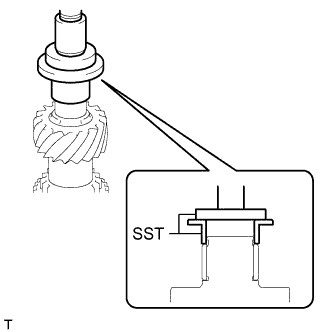 |
Using SST and a press, install a new radial ball bearing (inner race) to the counter gear.
| 2. INSTALL COUNTER GEAR REAR BEARING SNAP RING |
 |
Select a new snap ring that will allow minimal axial play.
| Part No. | Mark | Thickness |
| 90520-31015 | A | 2.35 to 2.40 mm (0.0925 to 0.0945 in.) |
| 90520-31016 | B | 2.40 to 2.45 mm (0.0945 to 0.0965 in.) |
| 90520-31017 | C | 2.45 to 2.50 mm (0.0965 to 0.0984 in.) |
| 90520-31018 | D | 2.50 to 2.55 mm (0.0984 to 0.1004 in.) |
| 90520-31019 | E | 2.55 to 2.60 mm (0.1004 to 0.1024 in.) |
| 90520-31020 | F | 2.60 to 2.65 mm (0.1024 to 0.1043 in.) |
| 90520-31021 | G | 2.65 to 2.70 mm (0.1043 to 0.1063 in.) |
| 90520-31022 | H | 2.70 to 2.75 mm (0.1063 to 0.1083 in.) |
| 90520-31023 | J | 2.75 to 2.80 mm (0.1083 to 0.1102 in.) |
| 90520-31024 | K | 2.80 to 2.85 mm (0.1102 to 0.1122 in.) |
| 90520-31025 | L | 2.85 to 2.90 mm (0.1122 to 0.1142 in.) |
| 90520-31033 | M | 2.90 to 2.95 mm (0.1142 to 0.1161 in.) |
Using a snap ring expander, install the snap ring to the counter gear.
| 3. INSTALL NO. 1 TRANSMISSION CLUTCH HUB |
| 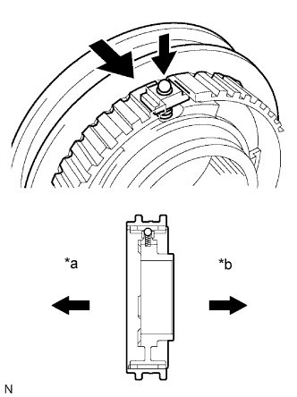 |
Apply a light coat of gear oil to the sleeve and hub.
Install the clutch hub to the clutch hub sleeve.
| *a | 1st Gear Side |
| *b | 2nd Gear Side |
Install one of the balls to each shifting key.
Install one of the springs to each shifting key.
Install the shifting keys with balls and springs to the No. 1 clutch hub.
| 4. INSTALL 2ND GEAR NEEDLE ROLLER BEARING |
| 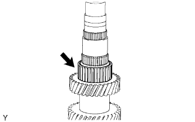 |
Coat the 2nd gear needle roller bearing with gear oil, and then install it to the counter gear.
| 5. INSTALL COUNTER SHAFT 2ND SPEED GEAR |
| 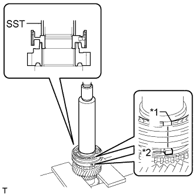 |
Coat the counter shaft 2nd speed gear with gear oil, and then install it to the counter gear.
Coat the No. 1 synchronizer ring set with gear oil, and then install it to the counter gear.
Using SST and a press, install the No. 1 transmission clutch hub to the counter gear.
| *a | Groove |
| *b | Protrusion |
Check that the gear and synchronizer ring move smoothly.
| 6. INSTALL NO. 1 CLUTCH HUB SHAFT SNAP RING |
 |
Select a new snap ring that will allow minimal axial play.
| Part No. | Mark | Thickness |
| 90520-45013 | A | 2.28 to 2.33 mm (0.0898 to 0.0917 in.) |
| 90520-45014 | B | 2.33 to 2.38 mm (0.0917 to 0.0937 in.) |
| 90520-45015 | C | 2.38 to 2.43 mm (0.0937 to 0.0957 in.) |
| 90520-45016 | D | 2.43 to 2.48 mm (0.0957 to 0.0976 in.) |
| 90520-45017 | E | 2.48 to 2.53 mm (0.0976 to 0.0996 in.) |
| 90520-45018 | F | 2.53 to 2.58 mm (0.0996 to 0.1016 in.) |
| 90520-45019 | G | 2.58 to 2.63 mm (0.1016 to 0.1035 in.) |
Using a snap ring expander, install the snap ring to the counter gear.
| 7. INSTALL NO. 1 SYNCHRONIZER RING SET (for 1st Gear) |
| 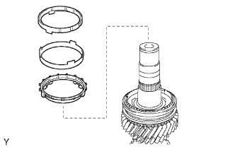 |
Coat the No. 1 synchronizer ring set with gear oil, and then install it to the counter gear.
| 8. INSTALL 1ST GEAR NEEDLE ROLLER BEARING |
| 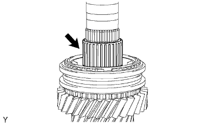 |
Coat the 1st gear needle roller bearing with gear oil, and then install it to the counter gear.
| 9. INSTALL COUNTER SHAFT 1ST SPEED GEAR |
| 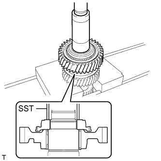 |
Coat the counter shaft 1st speed gear with gear oil and install it to the counter gear.
Using SST and a press, install the reverse gear spline piece.
| 10. INSTALL BALL |
| 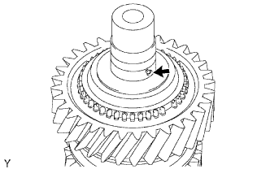 |
Install the ball to the counter gear.
| 11. INSTALL NO. 4 SYNCHRONIZER RING |
| 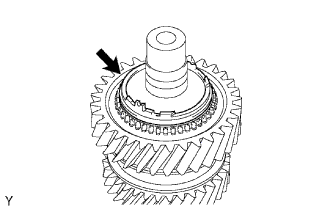 |
Coat the No. 4 synchronizer ring with gear oil and install it to the counter gear.
| 12. INSTALL REVERSE GEAR NEEDLE ROLLER BEARING |
| 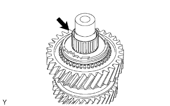 |
Coat the reverse gear needle roller bearing with gear oil and install it to the counter gear.
| 13. INSTALL COUNTERSHAFT REVERSE GEAR |
| 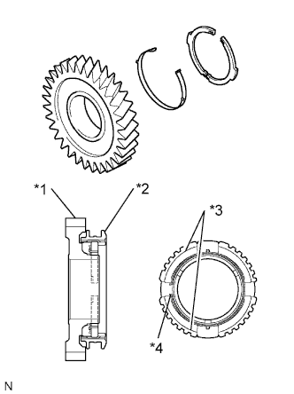 |
Install the key spring and 2 shifting keys to the reverse gear.
| *1 | Reverse Gear |
| *2 | Hub Sleeve |
| *3 | Shifting Key |
| *4 | Key Spring |
Install the hub sleeve to the reverse gear.
Coat the countershaft reverse gear with gear oil, and then install it to the counter gear.
| 14. INSTALL REVERSE GEAR BEARING RACE INNER |
| 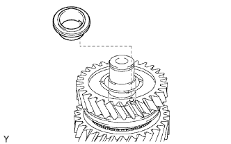 |
Align the groove of the reverse gear bearing race inner with the ball and install the reverse gear bearing race inner.
| 15. INSTALL COUNTER GEAR FRONT BEARING |
| 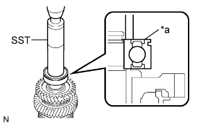 |
Using SST and a press, install the counter gear front bearing or roller to the counter gear.
| *a | Groove |
| 16. INSTALL NO. 1 COUNTER GEAR FRONT BEARING SNAP RING |
| 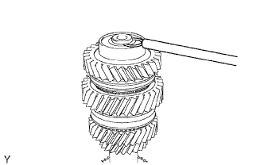 |
Select a new snap ring that will allow minimal axial play.
| Part No. | Mark | Thickness |
| 90520-31015 | A | 2.35 to 2.40 mm (0.0925 to 0.0945 in.) |
| 90520-31016 | B | 2.40 to 2.45 mm (0.0945 to 0.0965 in.) |
| 90520-31017 | C | 2.45 to 2.50 mm (0.0965 to 0.0984 in.) |
| 90520-31018 | D | 2.50 to 2.55 mm (0.0984 to 0.1004 in.) |
| 90520-31019 | E | 2.55 to 2.60 mm (0.1004 to 0.1024 in.) |
| 90520-31020 | F | 2.60 to 2.65 mm (0.1024 to 0.1043 in.) |
| 90520-31021 | G | 2.65 to 2.70 mm (0.1043 to 0.1063 in.) |
| 90520-31022 | H | 2.70 to 2.75 mm (0.1063 to 0.1083 in.) |
| 90520-31023 | J | 2.75 to 2.80 mm (0.1083 to 0.1102 in.) |
| 90520-31024 | K | 2.80 to 2.85 mm (0.1102 to 0.1122 in.) |
| 90520-31025 | L | 2.85 to 2.90 mm (0.1122 to 0.1142 in.) |
| 0520-31033 | M | 2.90 to 2.95 mm (0.1142 to 0.1161 in.) |
Using a snap ring expander, install the snap ring to the counter gear.
| 17. INSPECT REVERSE GEAR THRUST CLEARANCE |
 |
Using a feeler gauge, measure the reverse gear thrust clearance.
| 18. INSPECT 1ST GEAR THRUST CLEARANCE |
 |
Using a dial indicator, measure the 1st gear thrust clearance.
| 19. INSPECT 2ND GEAR THRUST CLEARANCE |
 |
Using a dial indicator, measure the 2nd gear thrust clearance.
| 20. INSPECT REVERSE GEAR RADIAL CLEARANCE |
 |
Using a dial indicator, measure the reverse gear radial clearance.
| 21. INSPECT 1ST GEAR RADIAL CLEARANCE |
 |
Using a dial indicator, measure the 1st gear radial clearance.
| 22. INSPECT 2ND GEAR RADIAL CLEARANCE |
 |
Using a dial indicator, measure the 2nd gear radial clearance.